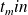

Partie V : Exploitation d'une base de données
Cette partie V correspond au début de la partie IV du sujet original. Elle met en place une base de données sur les données cinématiques (position et vitesse) des planètes.
À partir de mesures régulièrement effectuées par différents observatoires, une base de données des caractéristiques et des états des corps célestes de notre Système solaire est maintenue à jour. L'objectif de cette partie est d'extraire de cette base de données les informations nécessaires à la mise en œuvre des fonctions développées dans les parties précédentes, puis de les utiliser pour prévoir les positions futures des différentes planètes. Les données à extraire sont les masses des corps étudiés et leurs états (position et vitesse) à l'instant du début de la simulation.
Une version simplifiée, réduite à deux tables, de la base de données du Système solaire est donnée ci-dessous. Les masses sont exprimées en kilogrammes, les distances en unités astronomiques ( ) et les vitesses en kilomètres par seconde. Le référentiel utilisé pour exprimer les composantes des positions et des vitesses est galiléen, orthonormé et son centre est situé à proximité du Soleil.
La table CORPS répertorie les corps étudiés, elle contient les colonnes
id_corps (clé primaire) entier identifiant chaque corps ;
nom, chaine de caractères, désigne le nom usuel du corps ;
masse de type flottant, contient la masse du corps.
La table ETAT rassemble l'historique des états successifs (positions et vitesses) des corps étudiés. Elle est consti-tuée de huit colonnes :
id_corps de type entier, identifie le corps concerné ;
datem est la date de la mesure, sous forme d'un entier donnant le nombre de secondes écoulées depuis un
instant d'origine ;
trois colonnes de type flottant pour les composantes de la position x, y, z ;
trois colonnes de type flottant pour les composantes de la vitesse vx, vy, vz.
Question
Écrire une requête SQL qui renvoie la liste des masses de tous les corps étudiés.
SELECT masse FROM Corps ;
Les états des différents corps ne sont pas forcément tous déterminés exactement au même instant. Nous allons assimiler l'état initial (à la date  ) de chaque corps à son dernier état connu antérieur à .
Dans toute la suite, on supposera que la valeur de , sous le format utilisé dans la table Etat, est accessible à toute requête SQL via l'expression tmin().
Question
On souhaite d'abord vérifier que tous les corps étudiés disposent d'un état connu antérieur à tmin(). Le nombre de corps présents dans la base est obtenu grâce à la requête suivante.
SELECT COUNT(*) FROM Corps ;
Écrire une requête SQL qui renvoie le nombre de corps qui ont au moins un état connu antérieur à tmin().
Penser à supprimer les doublons avec le mot clé DISTINCT.
La solution la plus simple était sans doute la suivante.
SELECT count(DISTINCT id_corps) FROM Etat
WHERE datem <= tmin() ;Beaucoup de candidat-e-s ont proposé-e-s des jointures pour cette requête. En voici quelques unes qui aboutissaient aussi au résultat.
SELECT COUNT(DISTINCT Corps.id_corps)
FROM Corps NATURAL JOIN Etat
WHERE Etat.datem <= tmin() ;
La jointure NATURAL JOIN s'applique pour deux tables qui n'ont qu'une seule colonne de même nom et qui est celle qui sert à la jointure entre ces deux tables. C'est le cas ici mais cette jointure est très optionnelle, voici deux autres manières de rédiger cette requête.
SELECT COUNT(DISTINCT Corps.id_corps)
FROM Corps JOIN Etat ON (Corps.id_corps = Etat.id_corps)
WHERE Etat.datem <= tmin() ;
SELECT COUNT(DISTINCT Corps.id_corps)
FROM Corps, Etat WHERE Corps.id_corps = Etat.id_corps AND Etat.datem <= tmin() ;
Question
Écrire une requête SQL qui renvoie, pour chaque corps, son identifiant et la date de son dernier état antérieur à tmin().
Le dernier état antérieur est donc la date maximale qui reste inférieur à tmin().
SELECT id_corps, datem FROM Etat WHERE datem = (
SELECT MAX(datem) FROM Etat WHERE datem <= tmin() ) ;
Le résultat de la requête précédente est stocké dans une nouvelle table date_mesure à deux colonnes :
id_corps de type entier, contient l'identifiant du corps considéré ;
date_der de type entier, correspond à la date du dernier état connu du corps considéré, antérieur à tmin().
Pour simplifier la simulation, on décide de négliger l'influence des corps ayant une masse strictement inférieure
à une valeur fixée masse_min() et de ne s'intéresser qu'aux corps situés dans un cube, centré sur l'origine du
référentiel de référence et d'arête arete() donnée. Les faces de ce cube sont parallèles aux plans formés par les
axes du référentiel de référence.
Question
Écrire une requête SQL qui renvoie la masse et l'état initial (sous la forme masse, x, y, z, vx, vy, vz) de chaque corps retenu pour participer à la simulation. Classez les corps dans l'ordre croissant par rapport à leur distance à l'origine du référentiel.
Le SQL utilise certaines fonction mathématiques comme ABS(X) pour obtenir la valeur absolue de l'argument et POW(X, N) pour obtenir l'argument à la puissance indiquée.
SELECT C.masse, E.x, E.y, E.z, E.vx, E.vy, E.vz
FROM Corps AS C JOIN Etat AS E ON (C.id_corps = E.id_corps)
JOIN Date_mesure AS D ON (C.id_corps = D.id_corps AND E.datem = D.date_der)
WHERE C.masse >= masse_min() AND (
ABS(E.x) <= arete()/2 AND ABS(E.y) <= arete()/2 AND ABS(E.z) <= arete()/2 )
ORDER BY ( POW(E.x, 2) + POW(E.y, 2) + POW(E.z, 2) ) ;